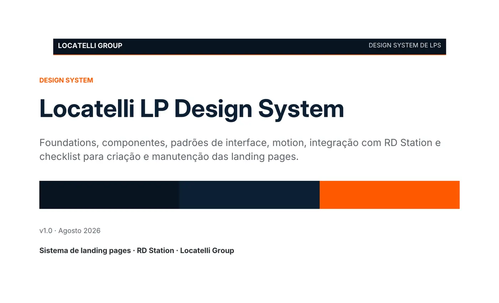

+18,6%
na média diária de envios
Evolução observada no período
Aquisição digital / Sistema de páginas
Páginas que desenvolvi para apresentar serviços, apoiar campanhas e facilitar o contato com a Locatelli Group.
01 / Contexto
Desenvolvi páginas para momentos diferentes da jornada: conhecer um serviço, encontrar uma solução, se inscrever em um evento e receber uma confirmação. A identidade visual conecta a coleção, mas cada página tem seu próprio objetivo.
02 / Abordagem
Trabalhei o conteúdo e a interface juntos: o que a pessoa precisa entender, em que ordem e qual ação faz sentido a partir dali. Desenvolvi as páginas para desktop e celular, com formulários de contato nas versões publicadas.

03 / Diretório
Em cada case, conto a proposta, o que fiz e as escolhas da interface. Você também pode explorar uma prévia da página.
As duas versões exploram uma hipótese de navegação. Os resultados do teste não estão disponíveis neste case.
04 / Resultados
Revisei a copy, o hero e o caminho até o formulário para orientar melhor quem procura os serviços.
Landing Pages / Locatelli Group
+18,6%
Evolução observada no período
76%
Nos envios após a reformulação
O que mudou
Reorganizei a mensagem para explicar a oferta e para quem o serviço faz sentido.
Refiz o hero e a hierarquia para dar mais clareza ao conteúdo e ao contato.
Incluí perguntas sobre a necessidade da empresa para dar contexto à conversa.
Comparei os resultados das seis páginas de serviços antes e depois da reformulação de agosto: janeiro a julho e agosto a 17 de novembro de 2026. As páginas de eventos têm objetivos próprios e ficam fora dessa comparação.
Para comparar períodos de durações diferentes, usei a média de formulários enviados por dia. Depois da reformulação, essa média ficou 18,6% maior.
Já os 76% mostram quantos dos envios posteriores indicaram uma frente de serviço. Quem marcou que ainda estava avaliando, apenas pesquisando ou escolheu “outro” não entra nessa parcela.
Refiz a copy, o hero e a apresentação dos serviços para deixar mais claro para quem era a oferta. Também deixei o formulário mais criterioso, pedindo informações sobre a necessidade da empresa. O foco foi reduzir preenchimentos por curiosidade ou fora do público-alvo.
Uma jornada com mais filtros pode ter menos preenchimentos por visitante. Neste comparativo, a proporção passou de 0,45% para 0,16%, uma queda de 64,4%, apesar do aumento da média diária de envios.
Essas taxas somam os acessos das páginas e estão arredondadas. A mesma pessoa pode visitar mais de uma LP.
Nas mensagens antigas, parte dos contatos procurava emprego ou tratava de assuntos fora da oferta. Meu foco foi deixar mais claro para quem eram os serviços e pedir informações que ajudassem o comercial a começar a conversa.
A indicação de um serviço dá contexto, mas a avaliação do contato continua com o comercial. Tráfego, época do ano e o conjunto de páginas também mudaram; por isso, esses números mostram o resultado do período, sem atribuir toda a variação ao redesign.